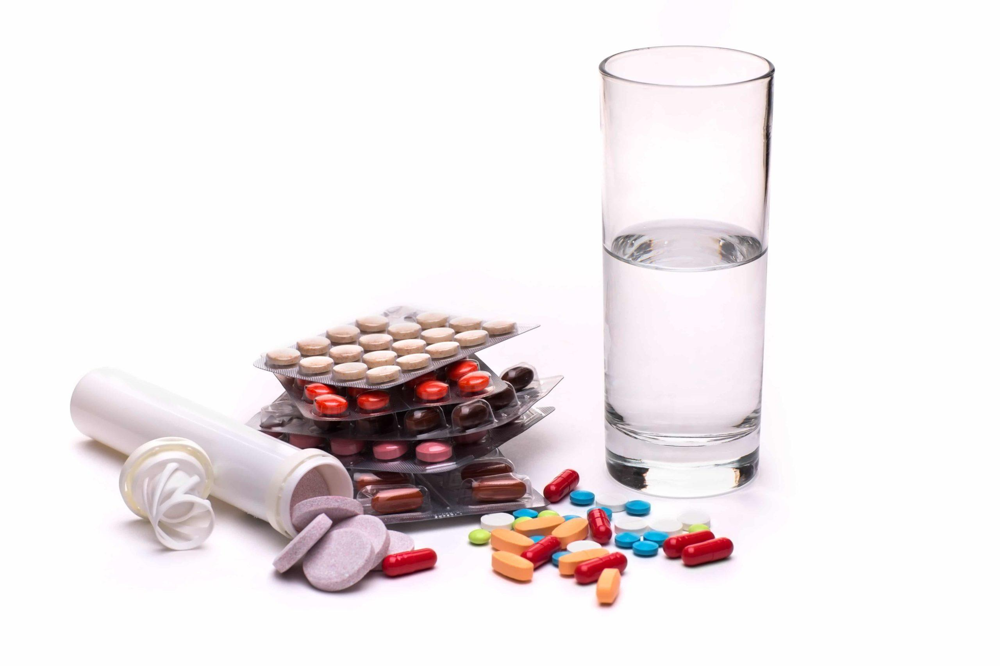

getting medicines at home quickly and with the social responsibility of saving our life
we are proposing an online pharmacy system to solve the traveling issue and time shortage. it surely helps for the elderly people and workers.
They can get medicine what they want in the home on time.
Easy Way to Get Medicine
we spend lot of times with our mobile and internet. we are do our shopping in online shops what we want. for the example dress, food, mobiles, and accessories. but if we want a medicine, we need to spend lot of time for the local pharmacies. elder people also need to travel some kilometer for the medicine, and we can't get medicine in the correct time.

shipping cost is much cheaper than the travelling to a traditional pharmacy
it is very easy to order prescription drugs through E-Pharmacy. Especially for people who live far away from a traditional pharmacy, the elderly, disabled people, and those who work very intensively, this system is both a very easy and a very fast method of obtaining medicine.
time saving
ou can order your medication within minutes and get your prescription medicines very quickly. All you have to do is to place an order by entering the prescription through the mobile application or website. You do not have to go to the pharmacy and you will not be faced with waiting in line at the pharmacy.
privacy and confidentiality
This system provides great convenience especially for those who are afraid of talking face to face with doctors and pharmacists. In addition, people are able to order medications without any drawback on special issues such as sexuality or adolescence that may be a source of embarrassment.
wide range of options
E-Pharmacy, which offers a much wider range of options than a traditional pharmacy, provides a great advantage to patients. It is not possible to find every drug in a physical pharmacy in a particular area, but there are many more medicine options available in general medicine stores.